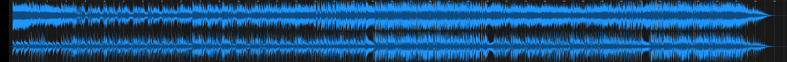
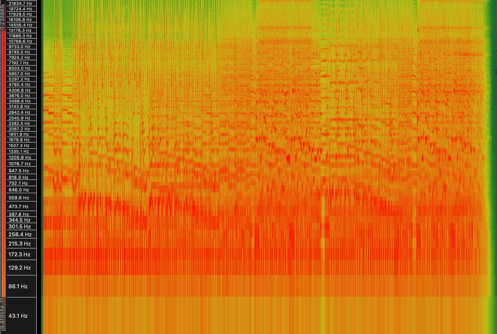
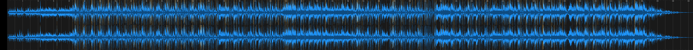
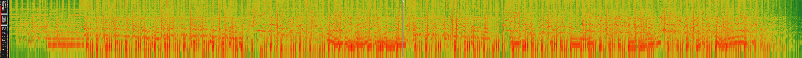
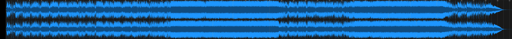
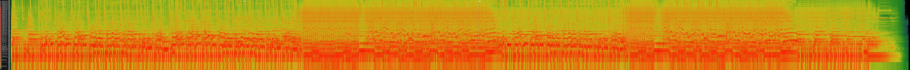

Week 8 Portfolio
Recording Metadata
The table below compares the metadata of three popular recordings of "Can't Take My Eyes Off You" by Frankie Valli, Lauryn Hill, and Muse.
| Metadata | Frankie Valli | Lauryn Hill | Muse |
|---|---|---|---|
| Title | Can't Take My Eyes Off You | Can't Take My Eyes Off You (I Love You Baby) | Can't Take My Eyes Off You |
| Artist | Frankie Valli | Lauryn Hill | Muse |
| Composer | Bob Crewe & Bob Gaudio | Bob Crewe & Bob Gaudio | Bob Crewe & Bob Gaudio |
| Album | Working My Way Back to You (Remastered) | The Miseducation of Lauryn Hill | Dead Star/In Your World - EP |
| Year | 1967 | 1998 | 2002 |
| Genre | Pop | R&B/Soul | Pop |
| Copyright | © 2012 Rhino Entertainment Company, A Warner Music Group. All Rights Reserved. | © 1998 Ruffhouse Records LP | © 2002 A&E Records Limited |
| Source | Purchased AAC audio file | Purchased AAC audio file | Purchased AAC audio file |
| Audio Format | ACC | ACC | ACC |
| Channels | Stereo | Stereo | Stereo |
| Sample Rate | 44.100 kHz | 44.100 kHz | 44.100 kHz |
| Bitrate | 256 kbps | 256 kbps | 256 kbps |
| Duration | 03:23 | 03:41 | 03:31 |
Waveform and Spectrogram Analysis
I used Sonic Visualiser to examine the waveforms and spectograms of three different recordings of "Can't Take My Eyes Off You".
These visualisations allowed me to compare the amplitude and frequency content of each recording.
Frankie Valli (1967)
Waveform

Spectogram

Lauryn Hill (1998)
Waveform

Spectogram

Muse (2002)
Waveform

Spectogram

Reflections
One advantage of time-frequency analysis is that it allows us to see more detail about a recording than a waveform alone. The waveform shows changes in amplitude throughout the song, where as the spectogram also shows which frequencies are more noticable at different points.
I noticed this when comparing the waveform and spectogram for Muse's version of "Can't Take My Eyes off You". The waveform looks quite dense and consistent for the most part of the recording, but it is difficult to tell much about the sound alone from this. Looking at the spectogram, there appears to be more energy concentrated in the lower frequencies, shown by the red and orange colours. This gives a better idea of what is happening within the recording rather than just how its amplitude changes.
I also found it interesting comparing all three recordings, as although they are versions of the same song, their waveforms look noticeably different. Muse's waveform appears more consistent, while Lauryn Hill's shows greater variation in amplitude. I think these tools could be useful when studying how artists reinterpret music, as they allow us to explore differences in the recordings that might not be immediately abvious from listening alone.
However, I think both visualisations are useful, as the spectogram can be harder to interpret and does not necessarily explain which instruments are producing certain frequencies.